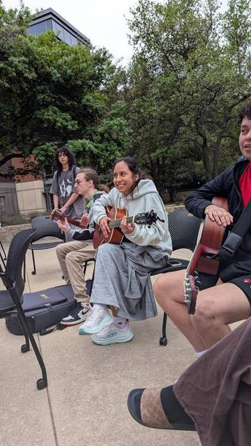

Improv a Solo
Find the root.
Drop the box.
Say something.
Everything you need to take a solo when someone points at you: where the notes are, the one scale that works almost everywhere, how to make it sing, and what to do with the silence.
“My theory is this — I have a basic mechanical knowledge of the operation of the instrument, and I got an imagination. And when the time comes up in the song to play a solo, it's me against the laws of nature. I don't know what I'm going to play, I don't know what I'm going to do.” Frank Zappa
Notice the order. Mechanical knowledge first, imagination second, and only then the leap. This page is the mechanical knowledge. The imagination is yours. The leap happens on Tuesday at 11:30.
The whole plan
Three moves.
That's the job.
A solo feels like magic from the outside. From the inside it is a short checklist you run before the first note, and then a conversation.
Find the root
Someone says “it's in G.” You need to put a finger on a G, right now, on the low E or A string. That is what the first section trains.
Drop the box
Land the pentatonic shape on that root. Every note in the shape is safe. You cannot play a wrong one. Now the hard part is over.
Say something
Bend, breathe, repeat yourself, leave space. Notes are cheap. Phrasing is what people remember, and it is the part nobody teaches.
Metronome
Solo over the click. If you can phrase against a metronome, a band is easy.
Step one
The notes on the
two fat strings.
You do not need to know every note on the neck to solo. You need the notes on the low E and A strings, because that is where scale shapes and barre chords hang their root. Learn these two strings and the whole fretboard becomes “this shape, starting here.”
Tap a note to light it up on both strings.
Memorize the landmarks, not the list
On the E string: fret 3 is G, 5 is A, 7 is B, 8 is C, 10 is D, 12 is E again. On the A string: fret 2 is B, 3 is C, 5 is D, 7 is E, 8 is F, 10 is G, 12 is A.
Those are all natural notes and they all sit on or next to a fret marker. Everything with a sharp or flat lives in between two of them. Learn the landmarks and you can work out the rest in a second.
Two shortcuts
Same fret, one string over, is five notes higher. Fret 5 on E is A; fret 5 on A is D. So the A string is just the E string shifted five frets to the left. Learn one string and you own both.
Fret 12 restarts everything. The octave. Whatever you know at fret 3, you also know at fret 15.
The drill
Set the metronome to 60. On each click, name a random note out loud and put a finger on it on the E string. Then do the A string. Then alternate. Two minutes a day for two weeks and the hesitation is gone.
Start with only naturals. Add sharps and flats when the naturals are automatic.
Step two
The pentatonic scale,
everywhere on the neck.
Five notes. That's it. Take a regular scale and remove the two notes most likely to clash with a chord, and what's left works over almost anything in rock, blues, country, pop, and a lot of jazz. It is the scale most of the solos you love are made of.
Because it repeats up the neck, the same five notes make five overlapping shapes, one starting on each scale note. Learn them and you can solo anywhere on the fretboard without hunting. Pick your key below; every diagram on this page redraws.
The five boxes, one at a time.
Tap any box to highlight it on the big neck above. Small grey dots are scale notes that belong to the next box over; they show you how the shapes lock together. Read each diagram left to right, low E string at the bottom, exactly like looking down at your own guitar.
Start with Position 1. Stay there a while.
Position 1 is “the box.” Its lowest note is the root on the low E string, which is why the last section mattered: find the root, put your index finger on it, and the box is under your hand. One finger per fret: index on the root fret, pinky (or ring) on the higher notes.
Most famous rock and blues solos live almost entirely in Position 1 and the top half of Position 2. You could stop here and be fine for years. Plenty of professionals did.
The shapes connect. That's the whole trick.
The top two notes of one box on any string are the bottom two notes of the next box. So Position 2 is not a new thing to memorize; it is Position 1 with every finger moved up to the next scale note. Learn them as neighbors, not as five separate diagrams.
After Position 5, Position 1 comes back twelve frets up. The neck is a loop.
Major and minor are the same shapes
Flip the Sound toggle and watch: the dots don't move, only the crimson root dots do. A major pentatonic is the minor pentatonic of the key three frets down. C major pentatonic is A minor pentatonic. Same notes, different home.
Practical rule: if the song feels sad, moody, or bluesy, play the minor box on the root. If it feels bright and happy (country, a lot of pop), slide the same box three frets down and treat the new note as home.
The blue note
Switch it on and one extra note appears between the 4 and the 5. It is dissonant on purpose. Don't stop on it; slide through it or bend into it. Used that way it is the single most “bluesy” sound on the instrument. Used as a landing note it is a mistake, and the audience will agree.
Pentatonic plus blue note is what people mean by “the blues scale.”
How to practice this so it sticks
Week 1: Position 1 in A minor, up and down, to the metronome. Then the same box in E, G, and D. Say the root note out loud as you land on it.
Week 2: Positions 1 and 2. Practice sliding between them on the G string.
Week 3 onward: add one box per week. Then play the whole scale from the lowest note on the neck to the highest, changing position every string. Then do it in a key you hate.
Do not play the scale as a solo
The scale is the alphabet. Running it up and down is reciting the alphabet. Once a box is under your fingers, stop playing it in order. Skip notes. Repeat one. Play three notes and stop. That is where the next two sections come in.
Quick test: can you play the box starting from the top? From the middle? Backwards in threes? If not, you know the picture, not the notes.
Step three, part one
Bending. Make the
guitar sing.
A piano can only play the notes it has. A voice slides between them, scoops into them, wavers on a long one, and falls off at the end of a line. Bending is how a guitar does all of that. It is the difference between playing notes and playing music.
How to actually do it
Use three fingers, not one. Bend with your ring finger, and put your middle and index fingers on the same string behind it. They push together. One finger alone hurts and goes flat.
Turn your wrist; don't push with your fingertips. Anchor your thumb over the top of the neck and rotate your forearm like turning a doorknob. The fingers stay locked; the wrist does the work.
Push up on the thin strings, pull down on the thick ones. High e, B, and G bend upward, toward the ceiling. Low E, A, and D bend downward, toward the floor, so you don't run off the fretboard.
Bend to a pitch, not a distance. Before you bend fret 7, play fret 9 and listen. Now bend 7 until it matches. A bend that lands a little flat is the most common mistake on the instrument, and your ears will hear it before you do.
Mute the strings you aren't playing. When you push the G string up, it slides under the B and high e. Rest the underside of your bending fingers against them so they don't ring.
The bends that live in the box
Position 1 in A minor. Dashed circles are the target pitch; numbers match the list below. These four bends, plus the little quarter-tone curl, are most of what you hear on the radio.
- 1 · G string, fret 7 up to 9 (whole step). The most-played bend in rock. The 4 rising to the 5.
- 2 · B string, fret 8 up to 10 (whole step). The ♭7 rising to the root. This one cries.
- 3 · High e, fret 8 up to 10 (whole step). ♭3 up to 4, usually at the top of a phrase.
- 4 · A string, fret 5 up a half step. The 4 pushed up to the blue note. Pull down, not up, on this string. Short and mean.
- 5 · The curl. Nudge the ♭3 (G string, fret 5) barely sharp, less than a half step. Pure blues. B.B. King built a career on it.
The vocabulary: what a singer does, and the bend that copies it
Each card is pitch over time. The dashed line is the target note. Hum each shape before you play it; if you can sing it, you can bend it.
The bending drill that fixes everything
Set the tuner in front of you. Play fret 9 on the G string; that's E. Now bend fret 7 and hold it until the tuner reads E, no flatter. Then let it back down slowly and keep it in tune the whole way. Ten reps. Then the B string, fret 8 up to fret 10 (A). Then high e, fret 8 to fret 10 (D).
Light strings make this easier. If you're on an acoustic with mediums, half-step bends and the curl are plenty. Nobody expects whole-step bends on a dreadnought.
Step three, part two
Phrasing. Talk,
don't type.
A bad solo is someone reading the dictionary very fast. A good solo is someone telling you a story at a bar. Same words. The difference is sentences, pauses, and repeating the good part.
Sing what you play, while you play it
Out loud, badly, it doesn't matter. Sing a short line, then play it. Then play and sing at the same time. Your voice cannot run scales at 200 beats per minute, so it will force you to phrase like a human being: short ideas, breaths, notes held long enough to mean something.
If your fingers are playing something you couldn't sing, you're not improvising. You're running a pattern.
Leave space. More than feels comfortable.
Play a phrase, then rest for as long as the phrase lasted. Rests are not empty; they're where the listener catches up and the band gets heard. Silence also makes the next note louder without touching the volume knob.
When in doubt, play half as many notes and hold them twice as long.
Call and response
Play a short idea (the call). Answer it with something similar but different (the response): same rhythm with a different ending, or the same notes an octave up. Two-bar call, two-bar answer, is the structure of the blues, of gospel, of most choruses you can hum.
Look at the phrase map above: nothing in it is longer than two and a half bars.
Repeat yourself. On purpose.
Beginners are terrified of playing the same lick twice. Audiences love it. Play an idea, play it again, then change the last note. Three times is a hook; that's why every riff you know does it.
One good idea developed beats ten ideas abandoned.
Rhythm matters more than notes
Try this: pick one note and solo with it for twelve bars using only rhythm, dynamics, and bends. It works. Now try twelve bars of every note in the scale with no rhythm. It doesn't. Where a note lands in the bar is more important than which note it is.
Start phrases off the beat sometimes. Start one on beat 4 of the bar before. Predictable placement is the fastest way to sound like a scale exercise.
Have a shape
Start low and simple. Build toward the middle. Peak near the end with your highest note and your biggest bend. Land somewhere that feels finished: the root, held, with vibrato.
Don't blow the big note in bar two. You'll have nowhere to go for the next ten.
Before the count-in
What to know when
someone points at you.
Improvising isn't making everything up. It is knowing five things in advance so you can make up the sixth. Here's the checklist, roughly in the order you need it.
What key are we in?
Ask. Nobody minds. If you can't ask, listen for the chord the song keeps coming home to, and find that note on the E string. Your box goes there.
Minor box or major box?
Test it: play the ♭3 of the minor box (second note on the low E string). If it sounds tough and right, stay minor. If it sounds sour, slide the box three frets down and play major. Blues lets you get away with either. Country doesn't.
Where do the chords change?
You don't need to know every chord. You need to know when the big change happens (bar 5 of a blues, the chorus of a pop song) and hit a note from the new chord right on it. Landing the root of the IV chord on beat one of bar 5 sounds like you know exactly what you're doing.
How long do I have, and how does it end?
One chorus? Two? Until the singer nods? Find out, then plan the last two bars first: end on the root, held, and stop playing so the band can come back in clean. A solo with a clear ending sounds better than a great solo that trails off.
Three licks you can play in your sleep
Nobody improvises from nothing. Have three short phrases in the box you can play cold: one that starts a solo, one that answers, one that ends. Steal them from records. On the night, you improvise the connections between them, and then one day you notice you didn't need them.
The chord tones are the safe houses
Inside the box, the root and the 5 always sound resolved. Land phrases there when you want to sound finished. The ♭3 and ♭7 sound bluesy and unfinished; use them mid-phrase. The 4 is a passing note; don't sit on it. Switch the dots to “Intervals” above and look at which ones you keep ending on.
Listen more than you play
Your ears should be on the drummer and the bass, not your fretting hand. If you lose the form, stop, listen for the turnaround, and come back in on the one. Coming back in strong after a rest looks intentional. Flailing doesn't.
Wrong notes are half a step from right ones
Every note on the guitar is one fret away from a note in the scale. Hit a clunker? Slide it a fret. Do it with confidence and it becomes a chromatic passing tone, which is a fancy way of saying jazz. Play it again on purpose and it was a choice.
Your first solo, tonight
Put the metronome at 80. Key of A minor, Position 1, frets 5 to 8. Rules: no more than four notes per phrase, a full bar of rest after each one, and every phrase ends on an A. Do twelve bars. Then do twelve more where each phrase has to include one bend.
That's it. That's improvising. Everything else on this page is about doing it with more vocabulary. Bring it to a meeting and someone will play rhythm for you; that's what we're here for.